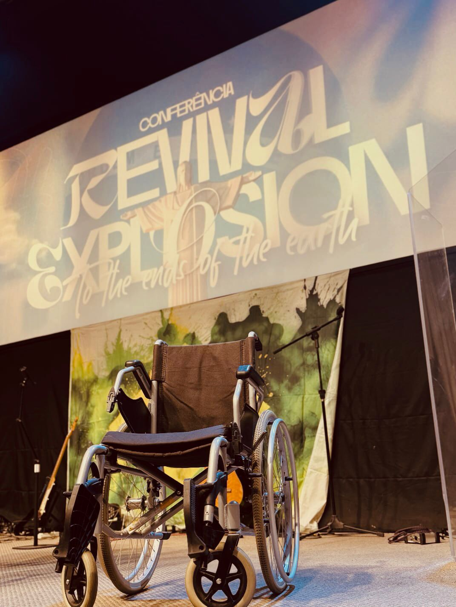
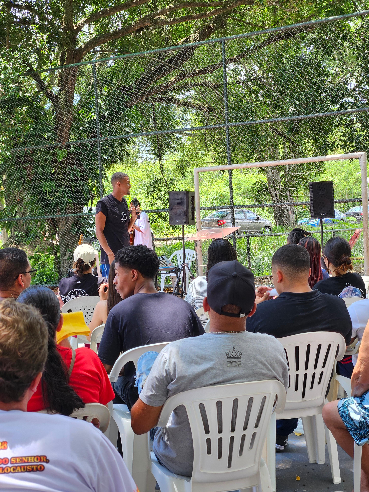
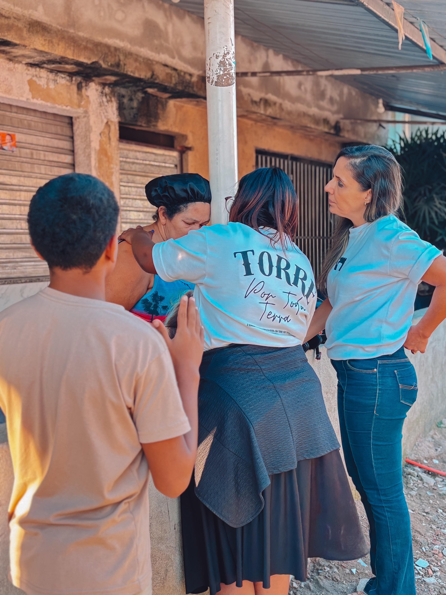
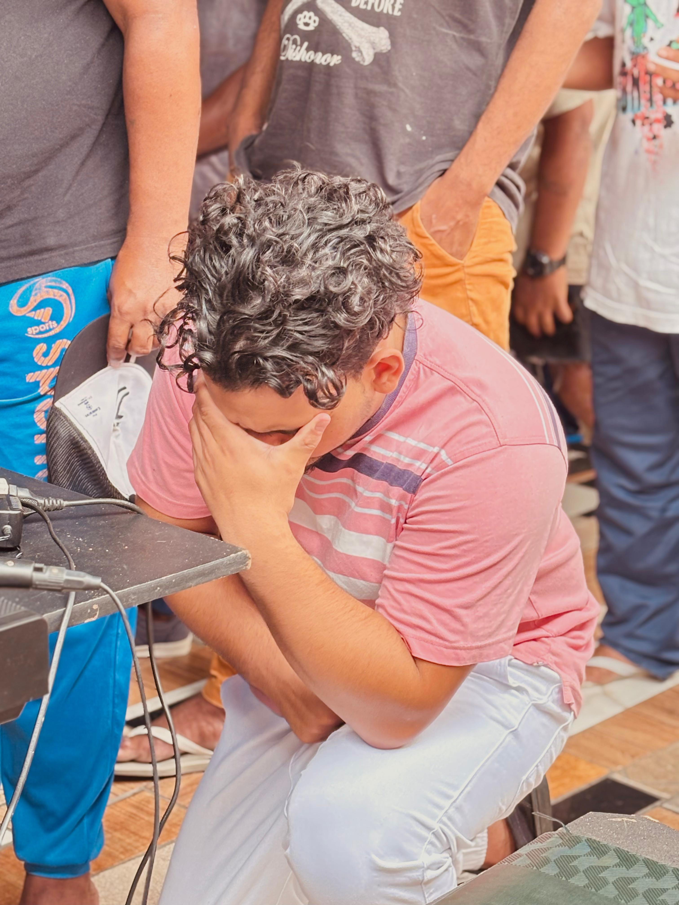

Quem Somos
O movimento missionário Por Toda Terra nasceu de uma iluminação do Espírito Santo, fundamentada em Atos 13. Somos uma tropa focada em expandir o Reino através de missões urbanas e transculturais.
Atuamos com evangelismo urbano, ações sociais, discipulado e o sustento de missionários. Cada passo dado é uma resposta ao chamado: ide.
Nossa base é a sã doutrina, o amor prático e a urgência de ser luz para as nações até que Ele venha.

Quatro frentes,
uma só missão.
Evangelismo Urbano
Saídas semanais às ruas, praças e periferias, levando a Palavra com amor e ação prática.
Apoio Missionário
Sustento financeiro, oração e cuidado pastoral para missionários enviados em diversos campos.
Discipulado
Acompanhamento de novos convertidos, formando seguidores maduros e enviadores.
Formação
Capacitação de obreiros e voluntários para a obra do Reino com excelência e doutrina sólida.
BE DIFFERENT
INSTITUTO COMUNITÁRIO
Nossos Projetos
Lar Pedro Richard
Visitas anuais a idosos, oferecendo carinho, atenção e a presença de Deus.
Missão Ágape
Suporte e discipulado em casas de recuperação masculina através da Palavra.
Casa Amarela
Apoio a crianças no Lixão de Gramacho e missões humanitárias no Malawi.
Missionários no Campo
Cada missionário apoiado representa vidas sendo alcançadas. Conheça algumas das famílias e obreiros que sustentamos com oração, recursos e cuidado integral.

Nome
Atuando em comunidades ribeirinhas com evangelismo na região.

Nome
Apoio ao missionário levando a palavra de Deus.
Cada gesto se torna semente.
Existem muitas formas de fazer parte. Escolha a sua e caminhe connosco.
Ore
A oração é o sustento espiritual de cada missionário e de cada vida alcançada.
Contribua
Sua oferta sustenta missionários, ações sociais e expedições evangelísticas.
Vá
Junte-se às saídas de evangelismo, viagens missionárias e projetos locais.
ATÉ OS CONFINS
TREINAMENTO MISSIONÁRIO



Capacitamos igrejas para o evangelismo por meio de um despertar espiritual genuíno, alinhado aos princípios da Bíblia Sagrada.
Trabalhamos com comunidades que desejam reacender o chamado, alcançar vidas e levar luz ao ambiente onde estão inseridas.
Nosso treinamento é dividido em:
- Teoria (Manhã): Louvor e imersão bíblica na missão.
- Prática (Tarde): Ativação dos dons e evangelismo de rua.
Os treinamentos são gratuitos.
ENTRAR EM CONTATO